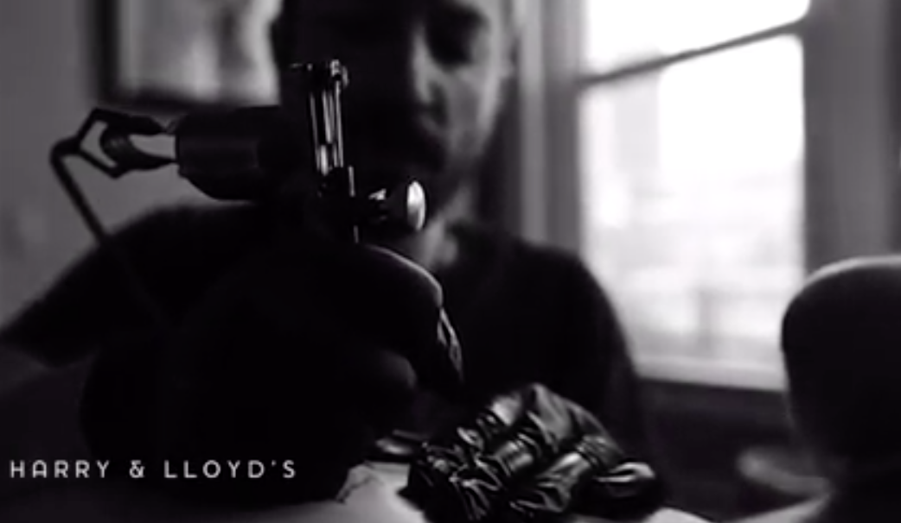

    <div class="container-fluid photos">
      <div class="row justify-content-center">
        
        <div class="col-md-6 pt-4">
          <figure class="mb-5" data-aos="fade-up">
            
          </figure>

          <h2 class="text-white mb-4" data-aos="fade-up">Hey There! I'm Thad!</h2>

          <div class="row" data-aos="fade-up">
            <div class="col-md-12">
              <p>You do know, right, that between the no-longer & the still-to-come you are being continually tattooed, inked with the skulls of everyone you’ve ever loved—the you & the you & the you & the you—you don’t sit in a chair, thumb through a binder, pick a design, it simply happens each time you bring your fingers to your face to inhale him back into you . . . tiny skulls, some of us are covered. You, love, could simply tattoo an open door, light pouring in from somewhere outside, you could make your body a door so it appears you (let her fill you) are made of light.</p>
            </div>
          </div>
        </div>

      </div>
</div>
